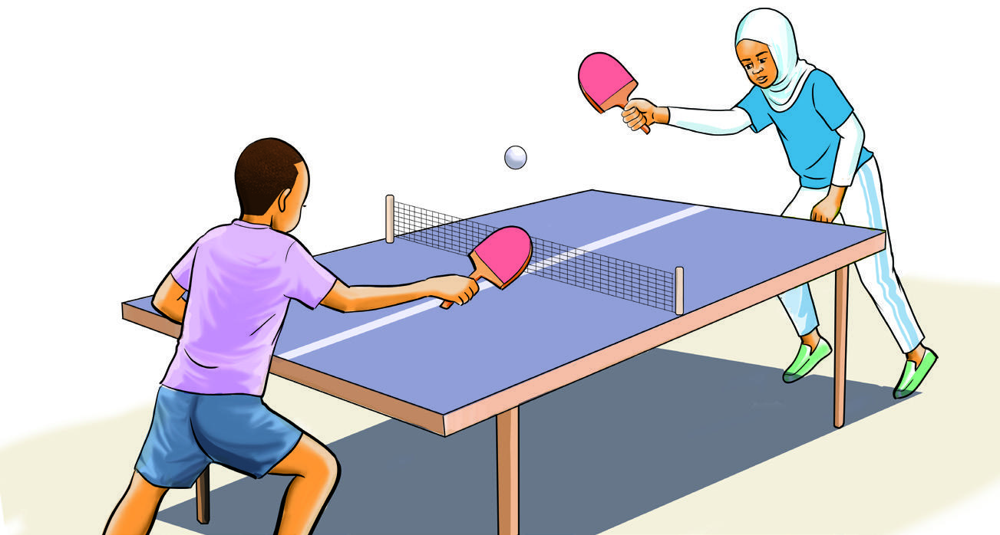
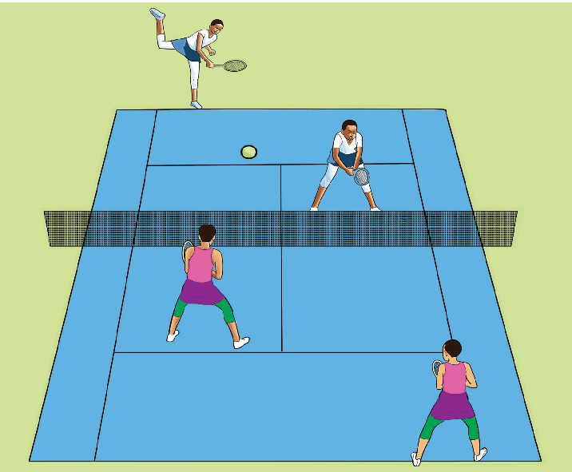

Figure 1.1: Table tennis singles
Partner sports
Partner sports are also referred to as dual sports. This refers to sports that need competitors to work in pairs to rely on one another in order to achieve the goals, as shown in Figure 1.2. For example, Beach volleyball, badminton, table tennis and tennis doubles.

Figure 1.2: Tennis doubles